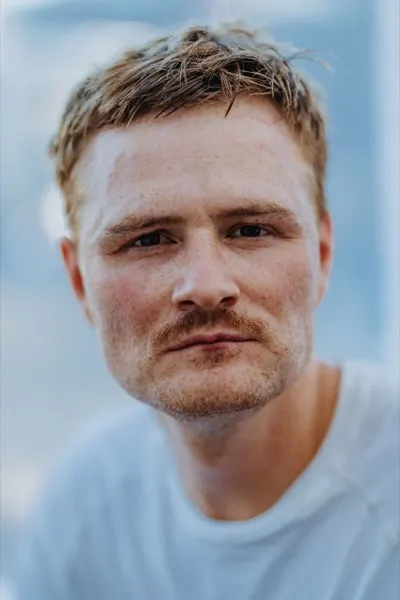

Backyard Ultra · Simplonpass, Wallis
GraatzugBackyard Ultra Simplon
Jede volle Stunde startet eine Runde von 6,706 km. Wer rechtzeitig zurück ist, läuft die nächste. Das Rennen endet, wenn nur noch eine Person läuft.
Alle Infos
auf einen Blick.
- Datum
- Samstag, 19. Juni 2027
Ausweichdatum 26. Juni 2027 - Erste Runde
- 12:00 Uhr
Check-in ab 07:30, Briefing 10:30 - Ende
- Offen
wenn nur noch eine Person eine Runde läuft - Ort
- Barralhaus, 3907 Simplon
1'844 m ü. M., Wallis - Runde
- 6,706 km, ~186 Hm
Wander- und Alpwege, keine Strassenquerung - Startplätze
- bis 130
je nach Bewilligung, Lotterie und Wildcards - Mindestalter
- 18 Jahre
am Renntag - Startgeld
- folgt
zahlbar erst nach der Auslosung - Kaution
- CHF 50
zurück beim Verlassen des Camps - Base Camp
- 3 × 3 m pro Person
auf Kies und Asphalt beim Barralhaus - Crew
- bis 4 registriert
3 gleichzeitig vor Ort, Anmeldung nach der Auslosung - Regeln
- Big's Backyard Ultra
Affiliierung geplant, kein Preisgeld
Stand: Affiliierung bei Big's Backyard Ultra in Vorbereitung, Soul Race des Last Soul Ultra in Abklärung, Anfragen bei Gemeinde Simplon und VBS laufen. Die Auslosung findet erst nach der Zusage statt. Wer dahinter steht
Eine Runde
pro Stunde.
- :57
Signal
Drei, zwei und eine Minute vor der vollen Stunde gibt es ein Signal. Alle stellen sich in den Startbereich.
- :00
Start
Alle starten gemeinsam auf die Runde von 6,706 km. Unterwegs ist keine Hilfe erlaubt, auch keine Stöcke.
- ~:50
Zurück
Die meisten brauchen 45 bis 55 Minuten. Die restliche Zeit gehört dir: essen, trinken, schlafen, Füsse pflegen.
- :00
Nächste Runde
Wer beim nächsten Signal nicht im Startbereich steht, scheidet aus. Wer bis zum Schluss eine Runde mehr läuft als alle anderen, beendet das Rennen.
24 Runden sind 100 Meilen (160,9 km). Ist die Affiliierung bei Big's Backyard Ultra bestätigt, zählt jede Runde für die Weltrangliste. Mehr zum Format · Alle Regeln
Einmal um
den Spittel.
Start und Ziel beim Barralhaus. Hinunter zur Niederalp, am Alten Spittel vorbei, hinauf nach Hopsche und über Gampisch zurück. Grosse Teile verlaufen auf Stockalpers Saumweg. Die Passstrasse wird nie gequert.
- 0,0BarralhausStart, Base Camp
- 1,4Niederalptiefster Punkt
- 2,7Alter SpittelStockalper, 1666
- 4,3Hopschehöchster Punkt
- 6,1Gampischletzte Kurve
- 6,7Barralhausnächste Runde
Aus OpenStreetMap gerechnet, Höhen aus einem Geländemodell. Vor dem Rennen mit dem Messrad auf exakt 6'706 m vermessen. Kein Schutzgebiet von nationaler Bedeutung.
Das Wochenende.
| Fr 18.06. | ab 18:00 | Wer will, bezieht das Quadrat schon am Vorabend |
| Sa 19.06. | 07:30 | Check-in, Startnummer, Kontrolle Pflichtausrüstung |
| 10:30 | Briefing für alle Läufer:innen und Crews | |
| 12:00 | Erste Runde | |
| ca. 21:30 | Ab Einbruch der Dunkelheit Stirnlampe | |
| So 20.06. | 12:00 | Start Runde 25, nach 160,9 km |
| offen | Letzte Runde, erfahrungsgemäss nach 30 bis 60 Stunden | |
| danach | Quadrat räumen, Abnahme, Kaution zurück |
Pflichtausrüstung
Stirnlampe mit Ersatz, warme Schicht, wasserdichte Jacke, Mobiltelefon. Wird beim Check-in kontrolliert.
Ganze PacklisteDein Quadrat
Zelt oder Pavillon bis 3 × 3 m, beschwert mit vier Sandsäcken von mindestens 15 kg. Strom gibt es keinen, bring Powerbanks mit.
Infos für die CrewAnreise
Zug bis Brig, dann Postauto auf den Simplonpass, 10 Minuten zu Fuss zum Barralhaus. Parkplätze beim Alten Spittel und beim Hospiz.
Anreise im DetailSicherheit: Sanität an allen Tagen rund um die Uhr vor Ort, elektronische Zeitnahme, Spital Brig in 31 Minuten. Gelaufen wird bei jedem Wetter, amtliche Unwetterwarnungen der Stufen 4 und 5 gehen vor.
Wer dahinter
steht.
Wir kennen Backyards von der Startlinie und aus dem Crew-Zelt. Am Last Soul Ultra war Pierre zweimal am Start, Daniel und Anes waren seine Crew.

Pierre BiegeInitiant, IT und Kommunikation. Last Soul Ultra 2025 und 2026 (40 und 33 Runden), Kader Team Schweiz an der Backyard-Team-WM 2026. Läuft am Graatzug selbst mit.- Daniel KellerRace Director: Strecke, Zeitnahme, Wettkampftechnik und Sicherheitskonzept.
- Anes GracicOrganisation: Sponsoring, Verpflegung und Unterkunft für das Team.
Kontakt: biege.pierre@gmail.com · Warum Graatzug und warum am Simplon
In drei Schritten
am Start.
- 1 · LostopfJetzt anmelden. Kostenlos und unverbindlich, dauert zwei Minuten.
- 2 · AuslosungNach Anmeldeschluss losen wir bis zu 130 Startplätze aus. Alle bekommen Bescheid per Mail.
- 3 · BestätigenWer gezogen wird, bezahlt Startgeld und Kaution und meldet danach die Crew an. Alle anderen kommen auf die Warteliste.
Wir sind am Simplon zu Gast bei der Gemeinde und beim VBS. Die Kaution sorgt dafür, dass jedes Quadrat sauber zurückgegeben wird. Du bekommst sie direkt zurück, wenn du nach dem Rennen das Camp verlässt und dein Quadrat leer ist.
Neben der Lotterie vergeben wir einige Wildcards. Poste ein Video auf Social Media, in dem du erzählst, warum du dabei sein willst, und markiere uns. Die genauen Regeln folgen.
Rund ums Backyard.
Gut zu wissen.
Was ist ein Backyard Ultra?
Ein Backyard Ultra ist ein Ultralauf ohne feste Distanz. Jede volle Stunde startet eine Runde von 6,706 Kilometern. Wer die Runde innerhalb der Stunde schafft, ruht sich bis zum nächsten Start aus. Wer nicht rechtzeitig an der Startlinie steht, scheidet aus. Das Rennen endet, wenn nur noch eine Person eine Runde läuft. Erfunden hat das Format Gary «Lazarus Lake» Cantrell in Tennessee.
Welche Backyard Ultras gibt es im Wallis und in der Schweiz?
In der Schweiz finden jedes Jahr rund ein Dutzend Backyard Ultras statt, zum Beispiel in Zürich, im Aargau, in Bern, in Graubünden und im Wallis. Im Wallis laufen Backyards ohne Zeitlimit in Varen und Saillon. Der Graatzug am Simplonpass ist das erste Backyard der Schweiz auf einem Alpenpass, auf rund 1'850 Metern über Meer.
Warum im Juni und warum am Simplon?
Beim Simplon Hospiz ist es laut dem SLF seit 1997 im Median ab dem 13. Mai schneefrei, Mitte Juni ist schneesicher. Die Passstrasse ist das ganze Jahr offen, das Barralhaus bietet befestigte Flächen fürs Camp, und die Runde kommt ohne Strasse und ohne Schutzgebiet aus.
Ist das ein Wettkampf?
Es gibt eine Resultatliste, wie bei jedem Backyard. Preisgeld und Podest gibt es keine.
Wie funktioniert die Lotterie?
Du trägst dich kostenlos in den Lostopf ein. Nach Anmeldeschluss ziehen wir bis zu 130 Startplätze. Wer gezogen wird, bezahlt Startgeld und Kaution und meldet danach seine Crew an. Alle anderen kommen auf die Warteliste und rücken nach, wenn jemand absagt.
Ist das ein offizielles Backyard und ein Soul Race?
Das ist geplant. Wir laufen nach den Regeln von Big's Backyard Ultra und melden den Graatzug als affiliiertes Backyard an, sobald die Bewilligungen von Gemeinde und VBS vorliegen. Erst danach zählen die Runden für die Weltrangliste und die Selektion des Schweizer Teams. Ob der Graatzug ein Soul Race des Last Soul Ultra wird, entscheidet das Last Soul Ultra. Beides steht hier, sobald es bestätigt ist.
Ist der Graatzug eine Sage vom Simplon?
Nein. Der Graatzug gehört dem ganzen Oberwallis, am Simplon selbst ist er nicht überliefert. Quellen: Tscheinen/Ruppen, Walliser Sagen (1872), Josef Guntern und Johann Jegerlehner.
Warum starten wir erst um 12 Uhr?
Damit alle am Samstagmorgen anreisen können, auch mit dem Postauto ab Brig. Check-in ab 07:30, Briefing um 10:30, Start um 12:00. Wer möchte, bezieht sein Quadrat schon am Freitagabend.
Was muss ich fürs Zelt mitbringen?
Ein Zelt oder Pavillon für dein Quadrat von 3 × 3 m und vier Sandsäcke oder Gewichte von mindestens 15 kg. Das Camp steht auf Kies und Asphalt, Heringe halten dort nicht, und am Pass kann es stark winden. Strom gibt es keinen, bring Powerbanks mit.
Wie komme ich hin?
Mit dem Postauto ab Brig bis zum Simplon Hospiz oder mit dem Auto über die Passstrasse. Parkplätze beim Alten Spittel und beim Hospiz. Bitte Fahrgemeinschaften bilden.
Was passiert bei einem Gewitter?
Ein Backyard läuft grundsätzlich bei jedem Wetter. Anordnungen der Behörden und Unwetterwarnungen von MeteoSchweiz der Stufen 4 und 5 gehen vor, dann unterbricht die Rennleitung. Die Regeln stehen im Reglement, bevor die Anmeldung öffnet.
Wie viele Personen darf meine Crew haben?
Wie beim Last Soul: bis zu vier registrierte Crew-Mitglieder, drei gleichzeitig vor Ort. Geholfen wird nur im Base Camp.